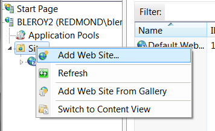
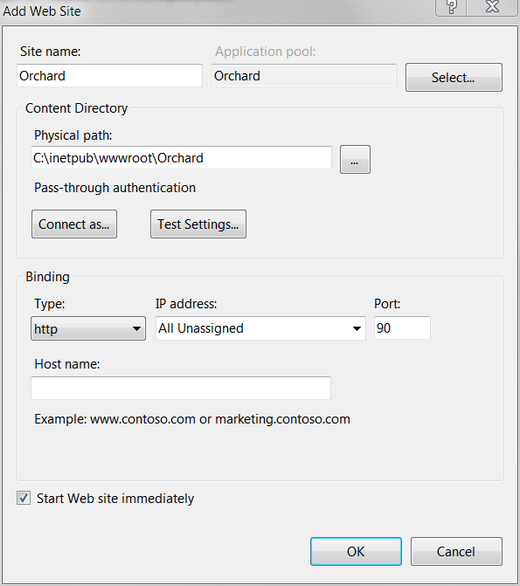
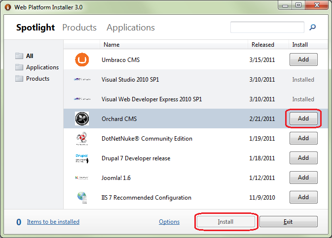
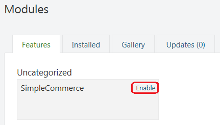
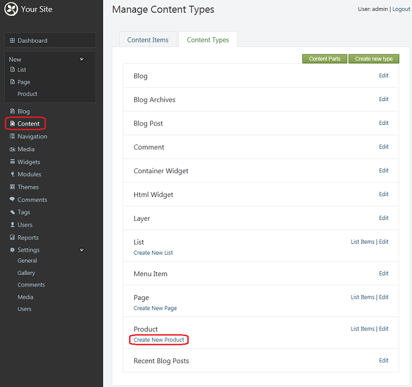

In this tutorial, you will learn how to develop a simple commerce module using only a text editor.
在本教程中，您将学习如何仅使用文本编辑器开发简单的商务模块。
If you do not have the Web Platform Installer on your computer, download it before beginning this tutorial.
如果您的计算机上没有[Web平台安装程序]（http://www.microsoft.com/web/downloads/platform.aspx），请在开始本教程之前下载它。
This guide has been marked for review. If you are just getting started with Orchard module development you should read the Getting Started with Modules course first. It will introduce you to building modules with Orchard using Visual Studio Community, a free edition of Visual Studio.
本指南已标记为可供审阅。如果您刚开始使用Orchard模块开发，则应首先阅读[模块入门课程]（模块入门）。它将向您介绍使用Visual Studio社区构建模块，Visual Studio社区是Visual Studio的免费版本。
Setting Up the Orchard Site
设置果园网站
First, you will set up a new Orchard website. If you already have a site set up, you can skip this section and jump directly to the code generation section. To start the setup, open IIS Manager, right-click Sites, and click Add Web Site.
首先，您将建立一个新的Orchard网站。如果您已经设置了站点，则可以跳过本节并直接跳转到[代码生成部分]（/ Documentation / Creating-a-module-with-a-simple-text-editor＃GeneratingCodefortheModule）。要开始安装，请打开 IIS Manager ，右键单击 Sites ，然后单击 Add Web Site 。

In the Add Web Site dialog box, fill in the fields to point the new website to a folder, such as \inetpub\wwwroot\Orchard. Name the new site Orchard and give it an unused port, such as 90. Use the default application pool (.NET 4.0 integrated pipeline). Click OK.
在添加网站对话框中，填写字段以将新网站指向文件夹，例如_ \ inetpub \ wwwroot \ Orchard_。将新站点命名为 Orchard 并为其指定一个未使用的端口，例如90.使用默认应用程序池（.NET 4.0集成管道）。单击确定。

From the Windows Start menu, launch Web Platform Installer, select Orchard CMS, click Add, and then click Install.
从Windows Start 菜单中，启动 Web Platform Installer ，选择 Orchard CMS ，单击 Add ，然后单击 Install 。

After you accept the license terms, Orchard is installed.
接受许可条款后，将安装Orchard。
Open a command window and change the current directory to point to the root of the site. Then run bin\orchard.exe.
打开命令窗口并将当前目录更改为指向站点的根目录。然后运行bin \\ orchard.exe。
{kind=link}
[！[图6. Orchard命令行]（../ Attachments / Creating-a-module-with-a-simple-text-editor / s_07_OrchardCLI.png）] ..：/ Attachments / Creating-a-module-与-A-简单的文本编辑器/ 07_OrchardCLI.png）
Type help commands to get the list of available commands. For now, only the help and setup commands are available. However, as Orchard is developed and modules are activated, new commands will become available. (The Orchard command-line executable actually discovers the commands from the modules inside of the application.)
输入help commands以获取可用命令列表。目前，只有help和setup命令可用。但是，随着Orchard的开发和模块的激活，新的命令将变得可用。 （Orchard命令行可执行文件实际上发现了应用程序内部模块的命令。）
To set up the site, enter the following command:
要设置站点，请输入以下命令：
setup /SiteName:Orchard /AdminUsername:admin /AdminPassword:123456
/DatabaseProvider:SqlCe
This is equivalent to setting up the site from the web interface.
这相当于从Web界面设置站点。
Leave the command window open. (In fact, don't close it until you have finished this tutorial.)
保持命令窗口打开。 （事实上，在完成本教程之前不要关闭它。）
Generating Code for the Module
为模块生成代码
Now you are ready to start developing the commerce module.
现在您已准备好开始开发商务模块。
Orchard provides a code generation feature that sets up the structure of an empty module to help you get started.
Orchard提供了代码生成功能，可以设置空模块的结构以帮助您入门。
By default, code generation is disabled. So you must first install and enable the feature.
默认情况下，禁用代码生成。因此，您必须先安装并启用该功能。
The easiest way to do this is to go to Modules in the admin UI and then click the "Gallery" tab.
最简单的方法是在管理界面中转到模块，然后单击“图库”选项卡。
Do a search for "code generation" and then install the module.
搜索“代码生成”，然后安装该模块。
To enable code generation, if you didn't do so right after install, you may enter the following command in the command window:
要启用代码生成，如果您在安装后没有立即执行此操作，则可以在命令窗口中输入以下命令：
feature enable Orchard.CodeGeneration
You will use a code-generation command to create a commerce module. Enter the following command:
您将使用代码生成命令来创建商务模块。输入以下命令：
codegen module SimpleCommerce
Open a Windows Explorer window and browse to the newly created \inetpub\wwwroot\Orchard\Modules\SimpleCommerce folder. Open the Module.txt file using a text editor.
打开Windows资源管理器窗口并浏览到新创建的_ \ inetpub \ wwwroot \ Orchard \ Modules \ SimpleCommerce_文件夹。使用文本编辑器打开Module.txt文件。
Change the description to "A simple commerce module". Change the description of the feature to be "A simple product part". Save the file and close it. The following example shows the complete Module.txt file after the changes.
将描述更改为“简单商务模块”。将功能的描述更改为“简单的产品部件”。保存文件并关闭它。以下示例显示更改后的完整Module.txt文件。
Name: SimpleCommerce
AntiForgery: enabled
Author: The Orchard Team
Website: http://orchardproject.net
Version: 0.5.0
OrchardVersion: 0.5.0
Description: A simple commerce module
Features:
SimpleCommerce:
Name: Simple Commerce
Description: A simple product part.
Category: Commerce
Creating the Model for the Part
为零件创建模型
Next, you will create a data model that is a representation of what will be stored in the database.
接下来，您将创建一个数据模型，该模型表示将存储在数据库中的内容。
In Modules/SimpleCommerce/Models, create a Product.cs file and add the following content:
在_Modules / SimpleCommerce / Models_中，创建一个_Product.cs_文件并添加以下内容：
using System.ComponentModel.DataAnnotations;
using Orchard.ContentManagement;
using Orchard.ContentManagement.Records;
namespace SimpleCommerce.Models {
public class ProductPartRecord : ContentPartRecord {
public virtual string Sku { get; set; }
public virtual float Price { get; set; }
}
public class ProductPart : ContentPart<ProductPartRecord> {
[Required]
public string Sku {
get { return Retrieve(r => r.Sku); }
set { Store(r => r.Sku, value); }
}
[Required]
public float Price {
get { return Retrieve(r => r.Price); }
set { Store(r => r.Price, value); }
}
}
}
This code has two properties, Sku and Price, that are virtual in order to enable the creation of a dynamic proxy that will handle persistence transparently.
这段代码有两个属性，即“Sku”和“Price”，它们是虚拟的，以便能够创建一个透明地处理持久性的动态代理。
The code also defines a content part that derives from ContentPart<ProductPartRecord> and that exposes the SKU and price from the record as public properties and infoset. You can find more info about infoset here. The properties have attributes that will surface in the UI as validation tests.
该代码还定义了一个内容部分，该部分源自ContentPart <ProductPartRecord>，并将SKU和价格从记录中公开为公共属性和信息集。 [你可以在这里找到更多关于信息集的信息]（http://weblogs.asp.net/bleroy/the-shift-how-orchard-painlessly-shifted-to-document-storage-and-how-it-ll-affect -您）。属性具有将在UI中显示为验证测试的属性。
In order for the application to pick up the new file, you need to add it to the module's project file. Open the SimpleCommerce.csproj file and look for "assemblyinfo.cs". After that line, add the following:
为了让应用程序获取新文件，您需要将其添加到模块的项目文件中。打开_SimpleCommerce.csproj_文件并查找“assemblyinfo.cs”。在该行之后，添加以下内容：
<Compile Include="Models\Product.cs" />
Save the file, but leave it open, because you will make additional changes to it throughout the tutorial.
保存文件，但保持打开状态，因为在整个教程中您将对其进行其他更改。
Navigate to the site in your browser to make sure the application's dynamic compilation feature picks up the new part and record. You will know that everything is working if you go to the Features administration screen and see the new SimpleCommerce feature.
导航到浏览器中的站点以确保应用程序的动态编译功能获取新部件和记录。如果您进入功能管理屏幕并查看新的 SimpleCommerce 功能，您将知道一切正常。
In the command window, enable the new feature using the following command:
在命令窗口中，使用以下命令启用新功能：
feature enable SimpleCommerce
Creating the Initial Data Migration File
创建初始数据迁移文件
Data migration is a pattern that enables an application or component to handle new versions gracefully, without any data loss. The main idea is that the system keeps track of the current version installed and each data migration describes the changes to go from one version to the next. If the system detects that there is a new version installed and the current data is from a previous version, the administrator of the site is prompted to upgrade. The system then runs all necessary migration methods until the data version and the code version are in sync.
数据迁移是一种模式，使应用程序或组件能够正常处理新版本，而不会丢失任何数据。主要思想是系统跟踪当前安装的版本，每次数据迁移都描述了从一个版本到下一个版本的更改。如果系统检测到安装了新版本且当前数据来自先前版本，则会提示站点管理员进行升级。然后系统运行所有必要的迁移方法，直到数据版本和代码版本同步。
Start by creating the initial migration for the new module, which will just create the data tables that are needed. In the command window, enter the following command:
首先为新模块创建初始迁移，这将只创建所需的数据表。在命令窗口中，输入以下命令：
codegen datamigration SimpleCommerce
This creates the following Migrations.cs file:
这将创建以下_Migrations.cs_文件：
using System;
using System.Collections.Generic;
using System.Data;
using Orchard.ContentManagement.Drivers;
using Orchard.ContentManagement.MetaData;
using Orchard.ContentManagement.MetaData.Builders;
using Orchard.Core.Contents.Extensions;
using Orchard.Data.Migration;
namespace SimpleCommerce.DataMigrations {
public class Migrations : DataMigrationImpl {
public int Create() {
// Creating table ProductPartRecord
SchemaBuilder.CreateTable("ProductPartRecord", table => table
.ContentPartRecord()
.Column("Sku", DbType.String)
.Column("Price", DbType.Single)
);
return 1;
}
}
}
The method name Create is the convention for the initial data migration. It calls the SchemaBuilder.CreateTable method that creates a ProductPartRecord table that has Sku and Price columns in addition to the columns from the basic ContentPartRecord table.
方法名称“Create”是初始数据迁移的约定。它调用SchemaBuilder.CreateTable方法，该方法创建一个_ProductPartRecord_表，除了基本_ContentPartRecord_表中的列之外，还包含_Sku_和_Price_列。
Notice that the method returns 1, which is the version number for the migration.
请注意，该方法返回1，这是迁移的版本号。
Add another migration step to this in order to illustrate how you can later alter the existing schema and type metadata as the module evolves. In this case, you will take this opportunity to add a feature that will enable the part to be attached to any content type. Add the following method to the data migration class:
向此添加另一个迁移步骤，以说明如何随后更改现有架构并在模块发展时键入元数据。在这种情况下，您将借此机会添加一项功能，使该部件可以附加到任何内容类型。将以下方法添加到数据迁移类：
public int UpdateFrom1() {
ContentDefinitionManager.AlterPartDefinition("ProductPart",
builder => builder.Attachable());
return 2;
}
This new migration is named UpdateFrom1, which is the convention for upgrading from version 1. Your next migration should be called UpdateFrom2 and return 3, and so on.
这个新的迁移名为UpdateFrom1，这是从版本1升级的约定。您的下一次迁移应该称为UpdateFrom2并返回3，依此类推。
Make sure the following line is present in the .csproj file. (It should already have been added by the code generation command.)
确保_.csproj_文件中存在以下行。 （它应该已经由代码生成命令添加。）
<Compile Include="Migrations.cs" />
Navigate to the Features screen in the dashboard. You see a warning that indicates that one of the features needs to be updated, and the Simple Commerce module is displayed in red. Click Update to ensure that the migrations are run and that the module is up to date.
导航到仪表板中的功能屏幕。您会看到一条警告，指示需要更新其中一个功能，并且 Simple Commerce 模块显示为红色。单击 Update 以确保运行迁移并且模块是最新的。
Adding a Handler
添加处理程序
A handler in Orchard is analogous to a filter in ASP.NET MVC. It's a piece of code that is meant to run when specific events happen in the application, but that are not specific to a given content type. For example, you could build an analytics module that listens to the Loaded event in order to log usage statistics. To see what event handlers you can override in your own handlers, examine the source code for ContentHandlerBase.
Orchard中的处理程序类似于ASP.NET MVC中的过滤器。它是一段代码，用于在应用程序中发生特定事件时运行，但不是特定于给定内容类型。例如，您可以构建一个侦听“Loaded”事件的分析模块，以便记录使用情况统计信息。要查看您可以在自己的处理程序中覆盖哪些事件处理程序，请检查“ContentHandlerBase”的源代码。
The handler you need in the module is not going to be very complex, but it will implement some plumbing that is necessary to set up the persistence of the part. We hope that this kind of plumbing will disappear in a future version of Orchard, possibly in favor of a more declarative approach such as using attributes.
您在模块中需要的处理程序不会非常复杂，但它将实现一些必要的管道，以便设置部件的持久性。我们希望这种管道将在Orchard的未来版本中消失，可能有利于采用更具说明性的方法，例如使用属性。
Create a Handlers folder and add a ProductHandler.cs file to it that contains the following code:
创建一个_Handlers_文件夹并向其中添加包含以下代码的_ProductHandler.cs_文件：
using Orchard.ContentManagement.Handlers;
using SimpleCommerce.Models;
using Orchard.Data;
namespace SimpleCommerce.Handlers {
public class ProductHandler : ContentHandler {
public ProductHandler(IRepository<ProductPartRecord> repository) {
Filters.Add(StorageFilter.For(repository));
}
}
}
Add the file to the .csproj file so that dynamic compilation can pick it up, using the following line:
将文件添加到_.csproj_文件中，以便动态编译可以使用以下行进行拾取：
<Compile Include="Handlers\ProductHandler.cs" />
Adding a Driver
添加驱动程序
A driver in Orchard is analogous to a controller in ASP.NET MVC, but is well adapted to the composition aspect that is necessary in web content management systems. It is specialized for a specific content part and can specify custom behavior for well-known actions such as displaying an item in the front end or editing it in the administration UI.
Orchard中的驱动程序类似于ASP.NET MVC中的控制器，但很好地适应了Web内容管理系统中必需的组合方面。它专门用于特定的内容部分，可以为众所周知的操作指定自定义行为，例如在前端显示项目或在管理UI中编辑项目。
A driver typically has overrides for the display and editor actions. For the product part, create a new Drivers folder and in that folder create a ProductDriver.cs file that contains the following code:
驱动程序通常会覆盖显示和编辑器操作。对于产品部件，创建一个新的_Drivers_文件夹，并在该文件夹中创建一个包含以下代码的_ProductDriver.cs_文件：
using SimpleCommerce.Models;
using Orchard.ContentManagement.Drivers;
using Orchard.ContentManagement;
namespace SimpleCommerce.Drivers {
public class ProductDriver : ContentPartDriver<ProductPart> {
protected override DriverResult Display(
ProductPart part, string displayType, dynamic shapeHelper)
{
return ContentShape("Parts_Product",
() => shapeHelper.Parts_Product(
Sku: part.Sku,
Price: part.Price));
}
//GET
protected override DriverResult Editor(ProductPart part, dynamic shapeHelper)
{
return ContentShape("Parts_Product_Edit",
() => shapeHelper.EditorTemplate(
TemplateName: "Parts/Product",
Model: part,
Prefix: Prefix));
}
//POST
protected override DriverResult Editor(
ProductPart part, IUpdateModel updater, dynamic shapeHelper)
{
updater.TryUpdateModel(part, Prefix, null, null);
return Editor(part, shapeHelper);
}
}
}
The code in the Display method creates a shape to use when rendering the item in the front end. That shape has Sku and Price properties copied from the part.
“Display”方法中的代码创建了在前端渲染项目时使用的形状。该形状具有从零件复制的“Sku”和“Price”属性。
Update the .csproj file to include the following line:
更新_.csproj_文件以包含以下行：
<Compile Include="Drivers\ProductDriver.cs" />
The Editor method also creates a shape named EditorTemplate. The shape has a TemplateName property that instructs Orchard where to look for the rendering template. The code also specifies that the model for that template will be the part, not the shape (which would be the default).
Editor方法还创建了一个名为EditorTemplate的形状。该形状有一个TemplateName属性，指示Orchard在哪里查找渲染模板。该代码还指定该模板的模型将是部件，而不是形状（这将是默认设置）。
The placement of those parts within the larger front end or dashboard must be specified using a Placement.info file that is located at the root of the module. That file, like a view, can be overridden from a theme. Create the Placement.info file with the following contents:
必须使用位于模块根目录的Placement.info文件指定这些部件在较大前端或仪表板中的位置。该文件与视图一样，可以从主题中重写。使用以下内容创建Placement.info文件：
<Placement>
<Place Parts_Product_Edit="Content:3"/>
<Place Parts_Product="Content:3"/>
</Placement>
Add the Placement.info file to the .csproj file using the following line:
使用以下行将Placement.info文件添加到.csproj文件：
<Content Include="Placement.info" />
Building the Templates
构建模板
The last thing to do in order for the new content part to work is to write the two templates (front end and admin) that are configured in the driver.
要使新内容部分工作，最后要做的是编写驱动程序中配置的两个模板（前端和管理员）。
Create the front-end template first. Create a Parts folder under Views and add a Product.cshtml file that contains the following code:
首先创建前端模板。在_Views_下创建一个_Parts_文件夹，并添加一个包含以下代码的_Product.cshtml_文件：
<br/>
@T("Price"): <b>$@Model.Price</b><br />
@Model.Sku<br/>
This is very plain rendering of the shape. Notice the use of the T method call to wrap the "Price" string literal. This enables localization of that text.
这是非常简单的形状渲染。注意使用T方法调用来包装“Price”字符串文字。这使得该文本的[本地化]（创建全局就绪应用程序）成为可能。
The administration view is a little heavier on HTML helper calls. Create an EditorTemplates folder under Views and a Parts folder under that. Add a Product.cshtml to the Parts folder that contains the following code:
管理视图在HTML帮助程序调用上稍微重一些。在_Views_下创建一个_EditorTemplates_文件夹，在其下创建一个_Parts_文件夹。将_Product.cshtml_添加到包含以下代码的_Parts_文件夹：
@model SimpleCommerce.Models.ProductPart
<fieldset>
<label class="sub" for="Sku">@T("Sku")</label><br />
@Html.TextBoxFor(m => m.Sku, new { @class = "text" })<br />
<label class="sub" for="Price">@T("Price")</label><br />
@Html.TextBoxFor(m => m.Price, new { @class = "text" })
</fieldset>
Add those two templates to the .csproj file using the following lines:
使用以下行将这两个模板添加到_.csproj_文件中：
<Content Include="Views\Parts\Product.cshtml" />
<Content Include="Views\EditorTemplates\Parts\Product.cshtml" />
Putting it All Together into a Content Type
将所有内容整合到一个内容类型中
The content part that you've put together could already be composed from the administration UI into a content type (see Creating Custom Content Types), but per the goal of this topic, you will continue by writing code using a text editor.
您放在一起的内容部分可能已经从管理UI组合成内容类型（请参阅[创建自定义内容类型]（创建自定义内容类型）），但根据本主题的目标，您将继续使用文本编辑器编写代码。
You will now build a new Product content type that will include the Product part and a number of parts that you can get from Orchard. So far, you have been focused on your specific domain. This will now change and you will start integrating into Orchard.
您现在将构建一个新的“Product”内容类型，其中包含“Product”部分以及您可以从Orchard获得的许多部分。到目前为止，您一直专注于您的特定领域。现在这将改变，你将开始融入Orchard。
To build the content type from a new migration, open the Migrations.cs file and add the following method to the class:
要从新迁移构建内容类型，请打开_Migrations.cs_文件并将以下方法添加到类中：
public int UpdateFrom2() {
ContentDefinitionManager.AlterTypeDefinition("Product", cfg => cfg
.WithPart("CommonPart")
.WithPart("RoutePart")
.WithPart("BodyPart")
.WithPart("ProductPart")
.WithPart("CommentsPart")
.WithPart("TagsPart")
.WithPart("LocalizationPart")
.Creatable()
.Indexed());
return 3;
}
Also add using Orchard.Indexing; to the top of the file.
还要将使用Orchard.Indexing;添加到文件的顶部。
What you are doing is creating (or updating) the Product content type and adding to it the ability to have its own URL and title (RoutePart), to have a rich text description (BodyPart), to be a product, to be commented on (CommentsPart), to be tagged (TagsPart) and to be localizable (LocalizationPart). It can also be created, which will add a Create Product menu entry, and it will also enter the search index (Indexed).
你正在做的是创建（或更新）Product内容类型，并为其添加具有自己的URL和标题（RoutePart）的能力，以便具有丰富的文本描述（BodyPart），产品，待评论（CommentsPart），被标记（TagsPart）和可本地化（LocalizationPart）。它也可以创建，它将添加一个 Create Product 菜单项，它还将输入搜索索引（Indexed）。
To enable your new module, open the Orchard dashboard and click Modules. Select the Features tab, find the SimpleCommerce module, and click Enable.
要启用新模块，请打开Orchard仪表板，然后单击 Modules 。选择 Features 选项卡，找到 SimpleCommerce 模块，然后单击 Enable 。

To add a new Product content type, click Content on the dashboard, select the Content Types tab, find Product, and click Create New Product.
要添加新的 Product 内容类型，请单击仪表板上的内容，选择内容类型选项卡，找到产品，然后单击创建新产品。

You now have a product editor that features your Sku and Price fields.
您现在有一个产品编辑器，其中包含您的Sku和Price字段。
The code for this module can be downloaded from the following page: Orchard.Module.SimpleCommerce.0.5.0.zip
该模块的代码可以从以下页面下载：[Orchard.Module.SimpleCommerce.0.5.0.zip]（../ Attachments / Creating-a-module-with-a-simple-text-editor / Orchard。 Module.SimpleCommerce.0.5.0.zip）